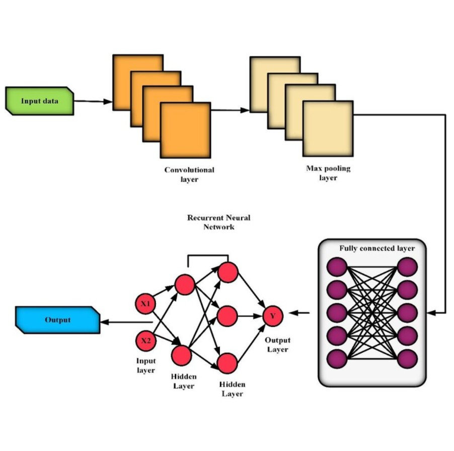
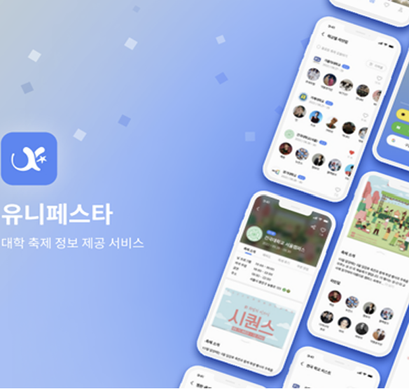

Student Researcher | CyLab (CyLab Autonomous Initiative)
Aug 2026 – PresentGuardrails for autonomous AI agents.
Pittsburgh, PA, USABuilding AI for defense. Building defenses for AI agents.
Security Software Engineer · AI Security
Carnegie Mellon University · Information Security
BACKGROUND
Guardrails for autonomous AI agents.
Pittsburgh, PA, USAAI Security, enterprise WAF, CDN architecture, and threat defense.
Seoul, KoreaFull-stack groupware and secure microservice architecture.
San Francisco, CA, USAFull-stack dashboards, APIs, and deployment automation.
Seoul, KoreaMORE TO EXPLORE

Deep learning for malware detection in encrypted TLS traffic.
A full-stack travel application. 3rd place out of 156 teams.

A unified platform for discovering university events.
BEYOND ENGINEERING
One of ten government-sponsored Korean student engineer representatives.
Designed and taught a hands-on Arduino curriculum.
Founded a coding club and taught over 200 elementary students.